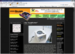
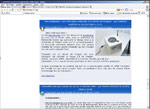
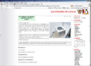
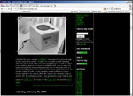
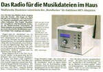

| www.mini-itx.com |
 The Rundfunker may look like a classic radio, but is actually a custom built Linux powered MP3 player that plays files shared over a wireless LAN. The project was created by a 5-strong team at the FH Augsburg, University of Applied Sciences. The case is constructed from painstakingly varnished MDF and a one-off Aluminium front panel. The team designed an interface module for the rotary dial and buttons - with a microcontroller to squirt information through a serial port header on the motherboard. They created an open source Knoppix based Linux derivative, called it Troubadix and booted it from the Compact Flash slot of the EPIA MS 10000 Mini-ITX motherboard inside. There's a 20x4 LCD display in the front. A custom java applet mimics the front panel and can be accessed by a web interface. An integrated amplifier drives the 2 way speaker system. One day all Mini-ITX projects will be like this. |
{kind=link}
| www.linucie.net , http://knoppix-fr.org/ |
  Mais c'est quoi donc ? Le site mini-itx.com nous fait découvrir le Rundfunker qui n'est pas un boitier radio, mais un ordinateur de fabrication maison qui parcourre le réseau local à la recherche de fichiers audio qu'il lit automatiquement. Ce minuscule ordinateur démarre avec une version modifiée de Knoppix appelé Troubadix qui est chargée sur une carte compact flash. Troubadix est un dérivé de Knoppix fait pour l'occasion qui contient le noyau 2.6 de Knoppix, MySQL, Apache2, PHP5, OpenSSH et la machine virtuelle java de Sun. Cependant, il n'y a aucun serveur graphique et donc aucune interface graphique. Le gros avantage de ce système est qu'il n'y a aucune pièce mobile. En effet Troubadix est installé sur une carte compact flash. Le système a donc très peu de chance d'être endommagé lors de transports... |
{kind=link}
{kind=link}
| www.hackaday.com |
 I think the first time I saw the “Rundfunker” I had ignored it because I though it was a commercial product. In reality, it’s a scratch built WiFi streaming radio that has the finish quality of a commercial product. The radio connects to your wireless network and scans for available MP3s. You can select the MP3s using the front mounted rotary encoder and LCD. The main board is a VIA EPIA MS10000E LVDS. It was chosen because most of the features are pin headers instead of ports. It’s also passively cooled and boots a custom Knoppix build from the compact flash. The controls are connected using an ATMega 168. The software is written in Java and features a web interface and remote control identical to the front panel. There’s a great write-up about the project on mini-itx.com, full source on the project wiki, and extensive photo gallery. |
{kind=link}
| www.casejunkies.com |
|
{kind=link}
| Augsburger Allgemeine, 28. Februar 2006, Seite 25 |
 Das Radio für die Musikdateien im Haus Multimedia-Studenten entwickeln den "Rundfunker" für drahtloses MP3-Abspielen Die Idee kam Mathias Bauer morgens unter der Dusche: "Wie kriege ich Musik überall in der Wohnung?" Sein Kommilitone Christian Leberfinger hatte zugleich denselben Gedanken. Das Projekt "Rundfunker" war geboren. Fünf Multimedia-Studenten der Fachhochschule entwickelten im Wintersemester ein neuartiges, betriebsfähiges Gerät, das drahtlos Musikdateien aus einem lokalen Netz empfängt und abspielt. |
{kind=link}

The "Rundfunker"
auf mini-itx.com gibt es seit heute wieder en neues sehenswertes projekt: jemand hat sich einen kleinen x86er computer zusammengebastelt, in ein schickes gehäuse gepackt und eine wlan-karte dran. das ergebnis ist ein ähnliches wie das was mein pentium 2 kann, jedoch mit drei unterschieden: dieses ding hier hat eingebaute lautsprecher, holt die musik nicht von der lokalen platte sondern via wlan und hat zudem schöne knöpfe und ein lcd-display. hätte ich genug zeit und geld würde ich es auch auf diese art machen, auch jedenfall ein netter zeitvertreib.